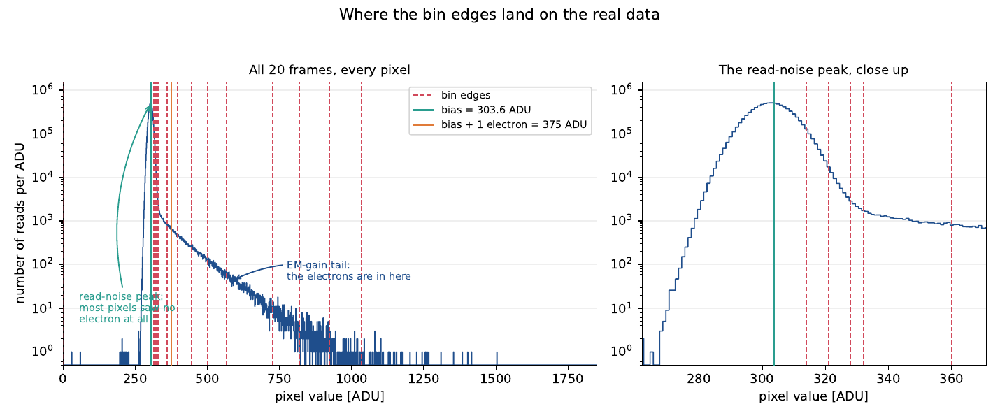
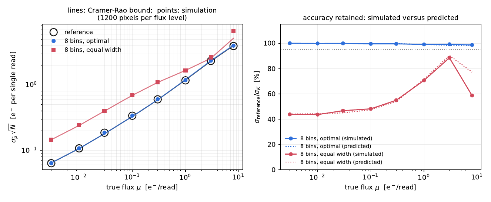
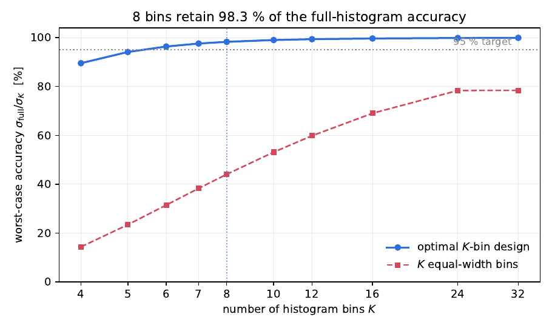

The answer first
For the PESTO EMCCD, over fluxes from 0.001 to 4 electrons per frame:
- 8 bins already retain 98.1 % of the precision of keeping every single ADU value.
- 16 bins retain 99.4 %, and that is what this toolkit ships with.
- 16 evenly spaced bins retain 60 %. Same storage, two thirds of the precision thrown away. Where the cuts go matters far more than how many there are.
The last number is a formality: the top bin is open, and collects everything at or above 1156 ADU.
What "retains 99.4 % of the precision" actually means
The detector digitises to whole ADU, so there is a natural reference: the full histogram, one bin per ADU. Any coarser histogram is a merge of neighbouring cells of that one, and merging can only lose information, never create it. So the full histogram is a ceiling, and the question is how close to it you can stay with 8 or 16 bins.
The measure is the Fisher information about the flux carried by one read of one pixel. It says how sharply the likelihood peaks, and it sets the best error any unbiased estimator can achieve on N reads:
Write eta for the ratio of the information carried by your K bins to
the information carried by the full histogram. Because the error goes as one over
the square root of the information, the error ratio is
sqrt(eta), and that square root is what "99.4 % of the precision"
refers to. eta = 0.9887 means your error bars are
1/sqrt(0.9887) = 1.006 times larger than if you had kept every raw
frame. Six parts in a thousand, for a hundredfold reduction in storage.
This is a comparison against the best a histogram can do, not against a perfect photon counter. The EM register's own randomness costs information that no choice of bins can recover; it is present on both sides of the ratio.
How many bins, for PESTO
Worst case over fluxes 0.001 to 4 e−/frame. "Precision kept" is
sqrt(eta): how large your error bars are compared with keeping
everything.
| Bins | eta | Precision kept |
|---|---|---|
| 4 | 0.8683 | 93.2 % |
| 8 | 0.9618 | 98.1 % |
| 12 | 0.9815 | 99.1 % |
| 16 | 0.9887 | 99.4 % |
| 24 | 0.9940 | 99.7 % |
| 32 | 0.9959 | 99.8 % |
The curve flattens fast. Going from 16 to 32 bins doubles the storage to buy four parts in a thousand. Going from 16 down to 4 loses seven percent of your precision, which on a night of data is a great deal more than it sounds.
Where the cuts go, and why
Write a pixel value in "gain units": u = (ADU − bias) / gain, so
u = 1 means one electron's worth of signal. Then the design has three
zones, and each exists for a reason you can see in the data.

plot_bins.py makes from your
own data.
1 Cuts through the read-noise peak
At these fluxes, the overwhelming majority of reads are pixels that saw nothing: they land in a narrow Gaussian at the bias, of width the read noise. Almost all of the flux information at low flux is in one single number: what fraction of reads escaped that peak. So the first cut, placed just above the peak, does nearly all of the work.
How many cuts the peak deserves depends on one dimensionless number, the
reduced read noise r = read noise / gain. For PESTO,
r = 6.82 / 71.06 = 0.096, which is large: a single electron amplified
by the EM register often produces less signal than a few sigma of read noise, so
the peak and the single-electron shoulder genuinely overlap. Cut too low and read
noise leaks in; cut too high and you throw away a third of your single electrons.
When neither leak can be made small, the remedy is to spend a second, third and
fourth bin resolving the overlap instead of discarding it. That is why
the PESTO design has edges at 314, 321, 328 and 332 ADU, all within the peak.
2 A ladder evenly spaced in sqrt(u)
Above the peak, the distribution is a mixture of Gamma laws: an n-electron
event has mean n and width sqrt(n) in gain units. The
structure to be resolved therefore widens as sqrt(u), and bins whose
widths follow that growth keep a constant resolving power all the way up the tail.
(This is the same reasoning that puts a square root at the heart of the
Anscombe transform.) The numerical optimum reproduces this without being told:
the PESTO rungs are evenly spaced in sqrt(u) to within a few percent,
over a range in u spanning more than a factor of ten.
3 One open bin at the top, placed where the counts stop
The last finite edge should not be put at saturation out of habit.
A bin where no read ever lands is a wasted bin. Since an n-electron event
reads out around n ± sqrt(n), and n itself rarely
exceeds mu + 3 sqrt(mu), the top cut belongs at whichever is
smaller: saturation, or that. For PESTO the second one wins by a wide margin, so
the top cut sits at 1156 ADU (about 12 electrons) even though the pixel could
report up to 5000. Everything above lands in the open bin: on the test data, 39
values out of 27.9 million.
The 16 bins, cut by cut
u = (ADU − bias) / gain, so u = 1 is one electron.
Bin 0 absorbs everything below the first cut; bin 15 everything above the last.
The right-hand column is the fraction of real PESTO reads that lands in each bin.
| Bin | From [ADU] | To [ADU] | u range | Reads |
|---|---|---|---|---|
| 0 | 0 | 314 | −4.27 – 0.15 | 92.834 % |
| 1 | 314 | 321 | 0.15 – 0.25 | 5.301 % |
| 2 | 321 | 328 | 0.25 – 0.34 | 0.691 % |
| 3 | 328 | 332 | 0.34 – 0.40 | 0.108 % |
| 4 | 332 | 360 | 0.40 – 0.79 | 0.363 % |
| 5 | 360 | 397 | 0.79 – 1.31 | 0.267 % |
| 6 | 397 | 444 | 1.31 – 1.98 | 0.189 % |
| 7 | 444 | 500 | 1.98 – 2.76 | 0.119 % |
| 8 | 500 | 565 | 2.76 – 3.68 | 0.066 % |
| 9 | 565 | 640 | 3.68 – 4.73 | 0.035 % |
| 10 | 640 | 725 | 4.73 – 5.93 | 0.016 % |
| 11 | 725 | 819 | 5.93 – 7.25 | 0.007 % |
| 12 | 819 | 922 | 7.25 – 8.70 | 0.003 % |
| 13 | 922 | 1034 | 8.70 – 10.28 | 0.001 % |
| 14 | 1034 | 1156 | 10.28 – 12.00 | 0.0003 % |
| 15 | 1156 | open | 12.00 – inf | 0.0002 % |
Bin 0 holds 93 % of all reads and bin 15 holds two parts in a million. That is not a mistake: bins are not there to hold reads, they are there to hold information, and the optimiser places them so each carries a comparable share of it.
Optimal versus evenly spaced
Precision kept, sqrt(eta), at each true flux. Same 16 bins of storage
in both cases.
| Flux [e−/frame] | 16 optimal | 8 optimal | 16 even |
|---|---|---|---|
| 0.001 | 99.5 % | 98.7 % | 62.0 % |
| 0.016 (sky) | 99.5 % | 98.3 % | 60.2 % |
| 0.1 | 99.5 % | 98.8 % | 61.2 % |
| 0.5 | 99.5 % | 98.6 % | 70.3 % |
| 1.0 | 99.5 % | 98.4 % | 79.2 % |
| 2.0 | 99.5 % | 98.3 % | 89.5 % |
| 3.0 | 99.5 % | 98.3 % | 94.2 % |
| 4.0 | 99.4 % | 98.1 % | 96.5 % |
Evenly spaced bins are worst exactly where this camera is used: at the sky level they cost 40 % of your precision, because they spend every bin on the empty part of the range and none on the read-noise peak, which is where the signal is.
How the optimum is found
Fisher information is a sum over bins, so the value of a set of bins is the sum of a value that each bin has on its own. A quantity like that, over a partition of an ordered line, can be maximised exactly by dynamic programming: the best K-bin partition ending at a given edge is built from the best (K−1)-bin partition ending at each earlier edge. Restricted to a dense set of candidate edge positions, the result is a global optimum, not a lucky local one.
One complication: the bins must be good over a range of fluxes, not at one flux, and "the worst flux in the range" is not a sum over bins. That is handled by solving a weighted version of the problem repeatedly, each time shifting weight towards whichever flux is currently served worst. Forty rounds converge in about two seconds.
The tool also fits an interpretable closed-form family (the three zones described above, with the number of peak cuts and the ladder ends as free parameters) and keeps whichever of the two wins. For PESTO at 16 bins the closed form wins, which is a happy outcome: the edges you ship are ones you can explain in a sentence.
Two rules people get wrong
Set the flux range to what your science needs, and no wider. The design protects the worst flux in the range you ask for, so asking for a range you do not need makes every flux worse.
Cuts through the read-noise peak are rounded up, never down.
Edges are whole ADU because the detector is digitised, and rounding a cut down
towards the bias lets read noise leak into the bin that is supposed to be
counting electrons. On a detector with read noise below one ADU, that single
rounding decision can take eta from 0.99 to 0.51.
Also worth knowing: the bias, gain and read noise are treated as known here. If you ever fit them jointly with the flux, the right object is a Fisher matrix and the optimal bins move, generally towards resolving the peak more finely, since that is where the bias and read noise are constrained.
Does a real fit actually deliver it?
Everything above is a Fisher-information calculation: it predicts the variance an efficient estimator would reach. It does not, by itself, prove that a real maximum-likelihood fit to a real 8-bin histogram gets there. That gap is closed with simulated data: draw reads from the exact signal chain, bin the same simulated reads under each design so no simulation noise enters the comparison, fit each pixel, and measure the scatter over 1200 independent pixels.


The full write-up, with every derivation, the Monte-Carlo tables and a second detector worked through, is here: optimal_bins.pdf.